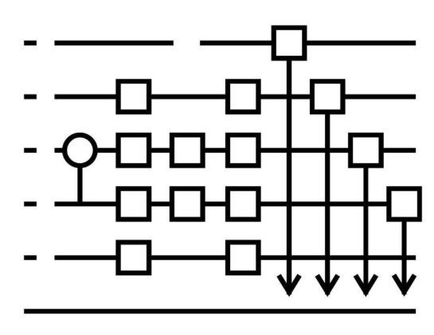
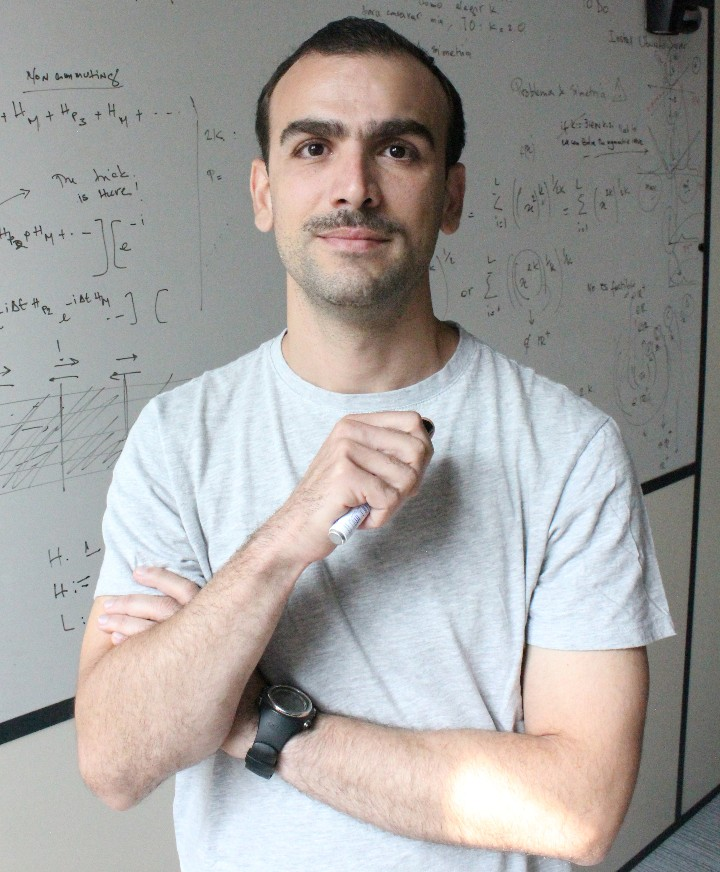

Quantum computing (QC) has attracted significant attention in recent years as a promising paradigm for solving computationally hard problems. Among the various application domains, optimisation plays a central role. While classical optimisation methods have reached a high level of maturity, many real-world problems remain challenging due to their complexity and scale.
QC offers new approaches to tackling such problems by leveraging quantum mechanical effects. The two principal paradigms are gate-based and adiabatic quantum computing. In the gate-based model, quantum circuits act on qubits through sequences of quantum gates, while adiabatic quantum computing relies on the gradual evolution of a quantum system to encode and solve optimisation problems.
However, current quantum hardware is still limited in terms of size, coherence times, and noise levels. As a result, hybrid quantum–classical approaches have emerged as a promising direction, combining the strengths of classical and quantum methods. In particular, variational quantum algorithms and quantum-inspired classical methods have gained increasing attention.
In this line of thought, a variety of perspectives arise regarding the role of QC in optimisation. While quantum algorithms have shown potential for speedups in specific cases, their practical advantage over classical approaches remains an open question in many settings. At the same time, classical methods continue to evolve, and insights from quantum computing have also inspired new classical algorithms.
This workshop aims to bring together researchers working on both quantum and classical optimisation to discuss current developments, challenges, and future directions. We welcome contributions from a broad range of topics, including theoretical advances, algorithm design, practical implementations, and applications.
Topics of interest include, but are not limited to:

Zakaria A. DAHI: Dr. Zakaria A. Dahi is a tenured researcher at INRIA and a lecturer at the Department of Computer Science at the University of Lille. His research focuses on the design of quantum-classical algorithms for combinatorial optimisation. This includes finding the synergies and boundaries between the quantum and classical paradigms. He has published works in several well-established journals and conferences. He has an experience in scientific research and teaching at the university level. He has been actively working, participating and elaborating several national and international research projects on classical and quantum combinatorial optimisation. He has also participated in the organisation of several national and international conferences.
Pascal Halffmann: Dr. Pascal Halffmann holds a PhD in mathematics, specifically in mathematical optimisation. He is currently a researcher at Fraunhofer ITWM, where he is in the leading role as research coordinator for the quantum computing activities of the institute. His research focuses on optimisation covering the development and application of optimisation algorithms and related techniques e.g., from machine learning. He is a proven expert in multiobjective and robust optimisation. Application areas cover energy, finance, logistics, and supply chain. Since 2021, he has shifted his research towards quantum computing with particular emphasis on quantum and hybrid quantum–classical algorithms for combinatorial, multiobjective, and robust optimisation problems. His work explores both the potential and the limitations of near-term quantum hardware, including variational quantum algorithms, quantum annealing, and QUBO-based approaches, also in application domains such as energy systems or finance. His expertise is underlined by a strong publication record including 16 peer-reviewed articles in impact journals, book chapters and one book. He has been part of several national and international conferences, where he contributed with 14 talks and additionally organized two sessions. Further, he was part of the organizing committee of one workshop and one conference. In addition to conferences, he has provided 17 invited talks at universities, industry events, and industry clients. He has been involved in seven research projects; in four projects and an additional industry project, he took over the role of project manager/ principal investigator. He has acquired four research projects with a total funding volume of more than four million euros. He has supervised or co-supervised seven bachelor’s and master’s theses in the areas of quantum computing, optimisation, and applied mathematics, and currently co-supervised two PhD theses (multiobjective robust optimisation and quantum optimisation). He has further teaching expertise with six lectures, given at RPTU, several tutorials, and by providing lectures, talks, and workshops for industry clients at Fraunhofer ITWM.
For any inquiries, please e-mail:
abdelmoiz-zakaria.dahi@inria.fr, pascal.halffmann@itwm.fraunhofer.de